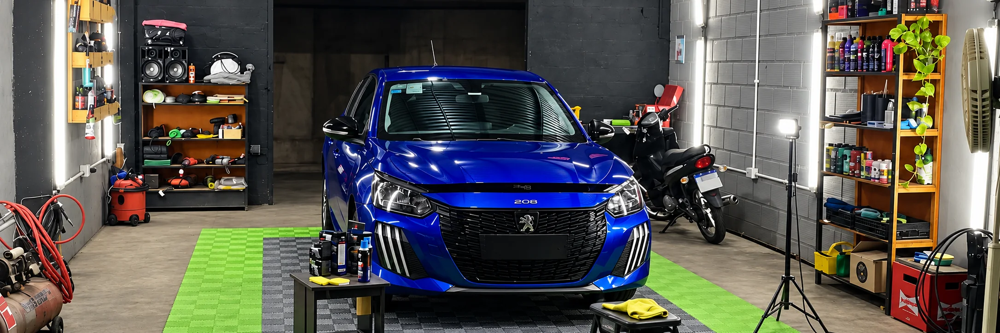
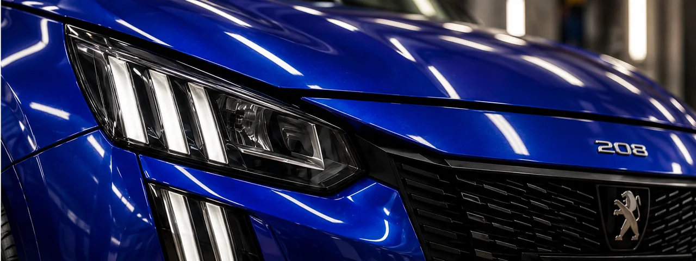
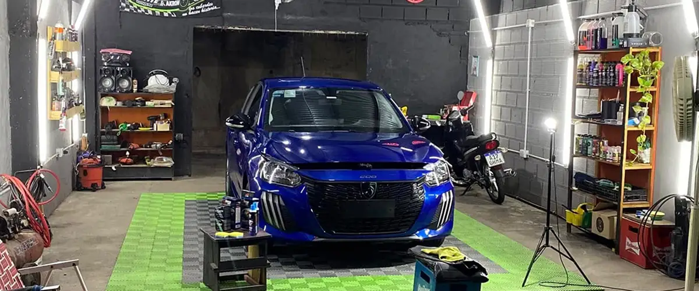
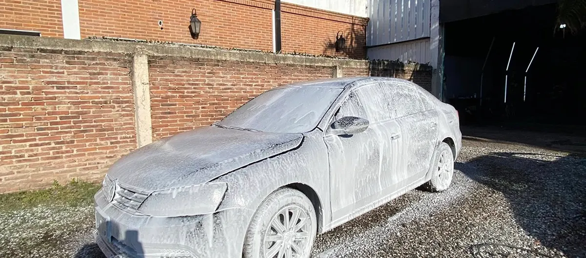
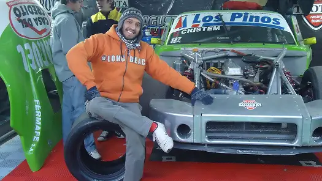

Cuidado
para cada detalle
Lavado exterior
Limpieza de carrocería y llantas, seguida de un secado cuidadoso.
Limpieza interior
Aspirado y limpieza de las superficies que acompañan cada viaje.
Detailing
Cuidado de los detalles, con limpieza y terminaciones para cada superficie.
Proyecto de portfolio · contacto de demostración.

El trabajo,
de cerca.
El cuidado está en las superficies, en las terminaciones y en el tiempo que le dedicamos a cada auto.


Una pasión que
viene de familia.
Somos un emprendimiento familiar de San Nicolás, unido por el gusto por los autos y la atención al detalle.
El automovilismo es parte de nuestra historia. Esa misma dedicación nos acompaña en el taller: cuidar cada vehículo como cuidaríamos el nuestro.
Conocé el espacio de contacto
Cada auto tiene
su historia.
Este espacio muestra cómo sería el contacto con Pikys Detail.
Es una demostración de portfolio: no se envían mensajes ni se reservan turnos.
San Nicolás de los Arroyos
Provincia de Buenos Aires